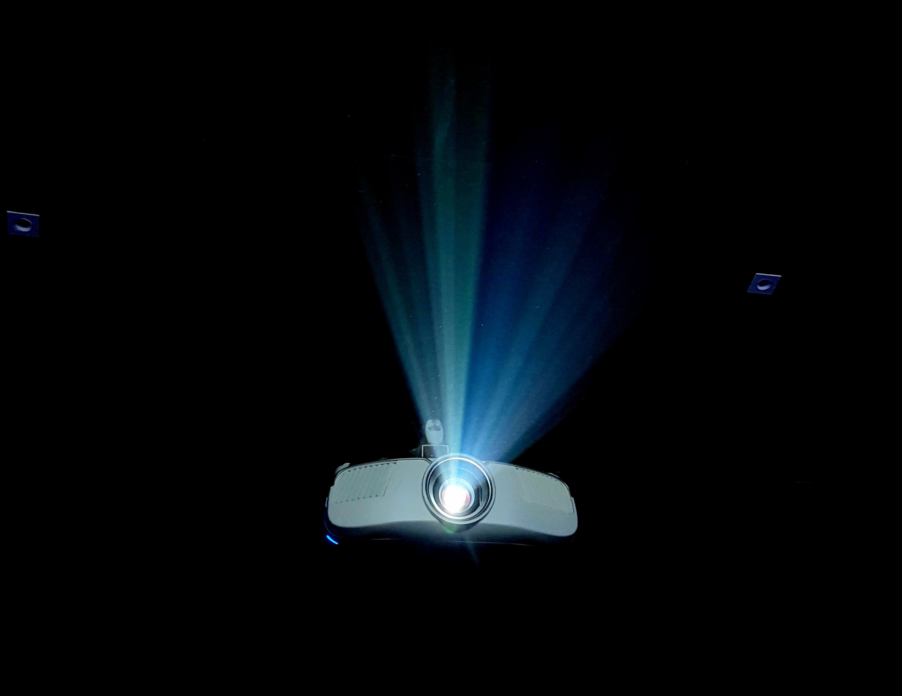
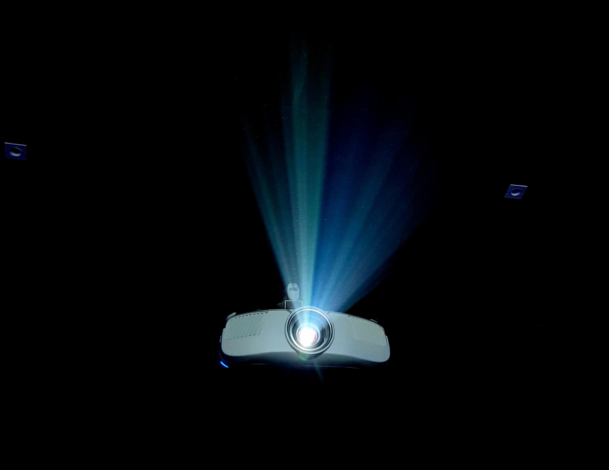
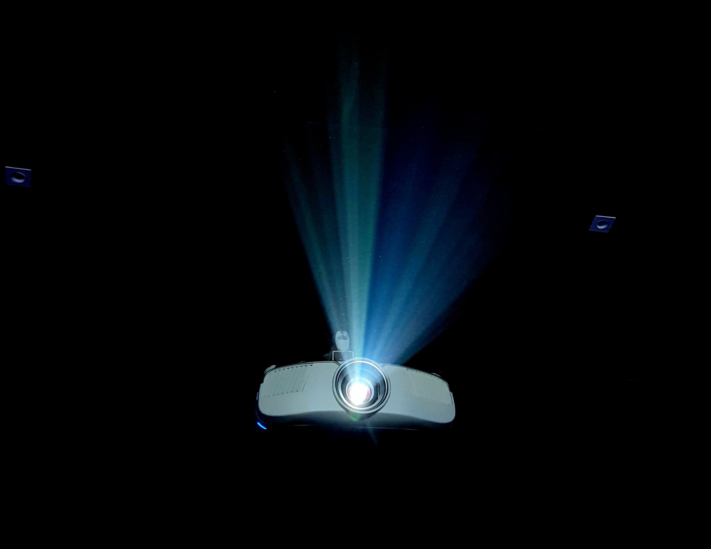

Navoiy viloyati
Karmana tumani
Hamza Umarov nomidagi
22 - umumiy o`rta ta`lim
maktab informatika fani o`qituvchisi
Sharipova Gavharning
Kompyuterning qo`shimcha qurilmalari
mavzusidagi dars dasturi
 

Navoiy viloyati
Karmana tumani
Hamza Umarov nomidagi
22 - umumiy o`rta ta`lim
maktab informatika fani o`qituvchisi
Sharipova Gavharning
Kompyuterning qo`shimcha qurilmalari
mavzusidagi dars dasturi


Kolonka (Spaeker)
Printer (printer)

3D printer (3D printer)
Scaner (Scaner)

Jostik (joystick)
Raqamli Kamera (digital camera)

Proyektor (projector)
Modem (router)
Web kamera (web camera)